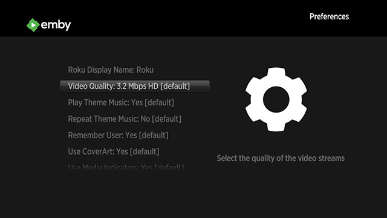

Roku
Emby für Roku ist im Roku App Store verfügbar. Es ist mit jedem Roku-Modell kompatibel, das mindestens Version 7.5 4099 der Roku-Firmware ausführt. Wenn Sie ein älteres Modell haben, das nicht in der Lage ist, diese Firmware-Version auszuführen, könnte unsere alte App immer noch für Sie funktionieren. Sie kann als ZIP-Datei aus dem alten Repository heruntergeladen werden.
Dank Emby Server Transcoding kann Emby für Roku fast jede Art von Medien verarbeiten. Wenn Sie lernen möchten, wie Sie Ihre Medien für Direct Play vorbereiten, lesen Sie bitte unten weiter.
Installationsanleitung
Eine Installationsanleitung ist in der Emby Community verfügbar.
Direct Play Medienformate
Video — H.264/AVC (.MKV, .MP4, .MOV), nur auf Roku 4: H.265/HEVC (.MKV, .MP4, .MOV); VP9 (.MKV)
Untertitel - SRT und andere textbasierte Formate
Audio – AAC (.MKV, .MP4, .MOV); MP3 (.MP3, .MKV); WMA (.ASF, .WMA, .MKV), FLAC (.FLAC, .MKV), PCM (.WAV, .MKV, .MP4, .MOV), AC3/EAC3 (.MKV, .MP4, .MOV, .AC3), DTS (.MKV, .MP4, .MOV), ALAC (.MKV, .MP4, .MOV, .M4A)
Bild — JPG, PNG, GIF (nicht animiert)
Mehrkanal-AAC wird nicht auf allen Roku-Modellen unterstützt. Roku TVs und Roku 4 Set-Top-Boxen unterstützen die Mehrkanal-Umwandlung in PCM-Stereo.
Bei Roku Set-Top-Boxen wird Dolby Digital Audio (AC3, EAC3) nur über Passthrough unterstützt.
DTS wird nur über Passthrough sowohl bei Roku Set-Top-Boxen als auch bei Roku TVs unterstützt. Sie müssen Ihren Roku-Player über HDMI oder S/PDIF mit einem TV oder Receiver verbinden, der Dolby Digital oder DTS dekodieren kann, um Videos mit Audiotracks in diesen Formaten zu hören.
Best Practices für Direct Play
Stellen Sie sicher, dass Ihre Medien die oben genannten Kriterien erfüllen.
Konfigurieren Sie Ihre Audioeinstellungen im Steuerungsfeld des Roku-Geräts. Wenn Sie möchten, dass DTS-Audio durchgeleitet wird, müssen Sie sicherstellen, dass Ihr Roku korrekt konfiguriert ist, oder es könnte zu Transkodierung kommen.
Vergleichen Sie die Bitrate Ihrer Dateien mit der Bitrate-Einstellung in der App. Sie können die Bitrate einer Datei überprüfen, indem Sie die Medieninformationen in der Weboberfläche ansehen. Wenn die Bitrate einer Datei höher ist als die Einstellung in der App, wird Transkodierung erforderlich. Eine Erhöhung der Bitrate-Einstellung in der App kann dazu beitragen, die Transkodierung zu reduzieren, kann jedoch die Wiedergabeleistung beeinträchtigen, wenn Ihre Netzwerkverbindung nicht schnell genug ist, um damit umzugehen.
